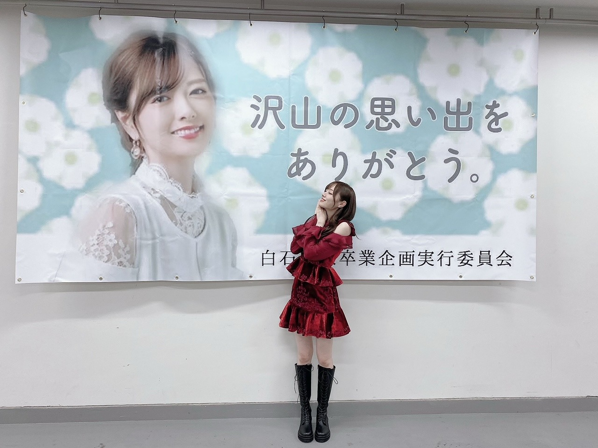
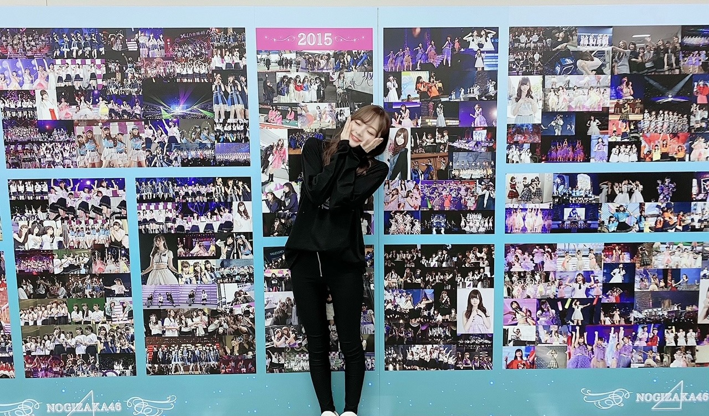
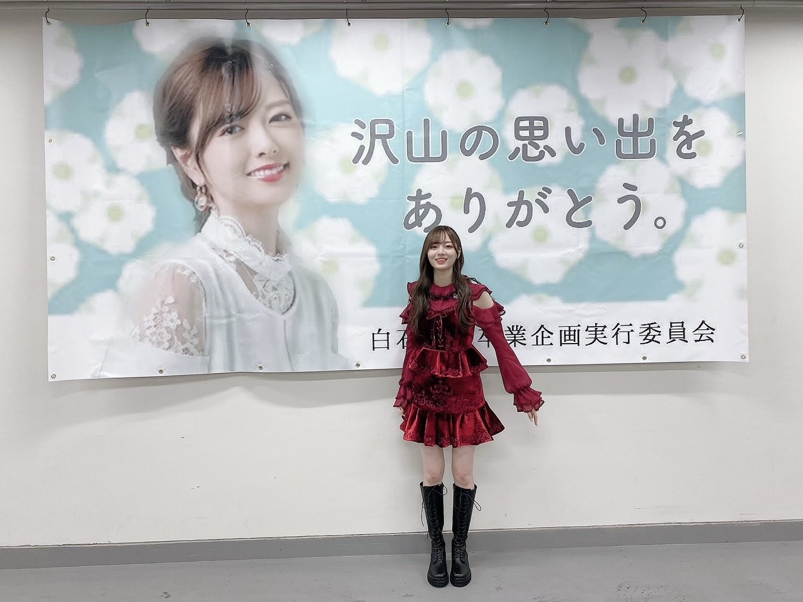

書ききれないけど ただただ、本当に、ありがとうございました！
なんて書けばいいのだろう、、
なにから書けばいいのだろう。
なんて思っていたら
気づけば一週間経ってしまいました。
１０月２８日は 大好きな大好きな

卒業発表されてから今日まで
何度泣いたかなあ。
ふと 家にいるとき
白石さんが卒業された後を考えては涙が出たし、
リハーサルでは
何度も本番を想像して涙が出たし、
当日なんて 何度泣いたか分かりません！！
今までの感謝の気持ちや
伝えきれなかった言葉達が
涙に変わって溢れてきたみたいです。
本人を目の前にしなくても
本人を思い浮かべて 涙が出るって
私にとって白石さんは 大きすぎる存在だったんだなって、改めて気づかされました。
私の恩人です！
キラキラした世界に導いてくれた方です。
何度も何度も話してきたけれど、
白石さんがいなければ
乃木坂46の梅澤美波は存在しなかったです。
今、私が大切に思える方達、そして
ファンの皆様に出会えたのも
白石さんのおかげです☀︎
感謝しかなくて。
本当に、ありがとうございます の気持ちでいっぱい。

すごく笑顔になれました！
白石さんの大切な日を一緒に過ごせた嬉しさと
卒業は悲しいだけじゃないって分かったから︎︎︎︎✌︎
でもやっぱり寂しいけれど、
その皆の寂しさを抱えられるくらい
強くなりたいです！
どんな時だって優しくて、
どんな時だって美しい女性でした。
ずっと、ずーーっと、
私たちの憧れの存在でいてくださって
本当にありがとうございました！
グループのためにたくさんたくさん頑張ってくださり、本当にありがとうございました
ずっとずっとお手本でいてくださって
ありがとうございました！
これからもずっと
変わらずに大好きな人です♡
本当に、本当にお疲れ様でした！

白石さんの円陣前の掛け声を聞いた時
その時急に、より卒業を実感して
あ、もう明日からは楽屋に白石さんいないのかって
一気に寂しくなってしまって
気づけば涙でボロボロでした（笑）
そんなとき写真を撮っていたら
白石さんがきてくれて
ふたりで写真撮ってくださいました♡
その写真は私の宝物にします︎︎︎︎✌︎
これは白石さんが目の前に現れた時のわたしだと思います（笑）
さあ！
明日も頑張るぞ〜！
Original：https://www.nogizaka46.com/s/n46/diary/detail/58661?ima=4936&cd=MEMBER